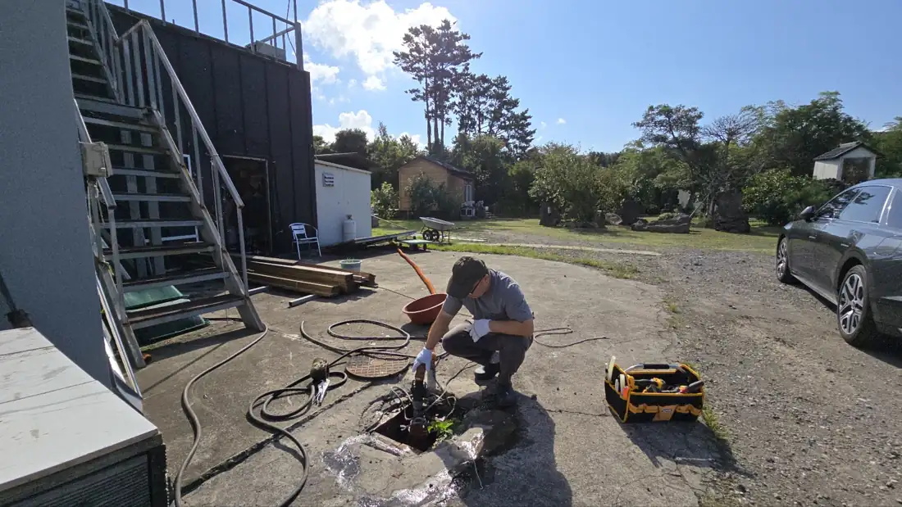
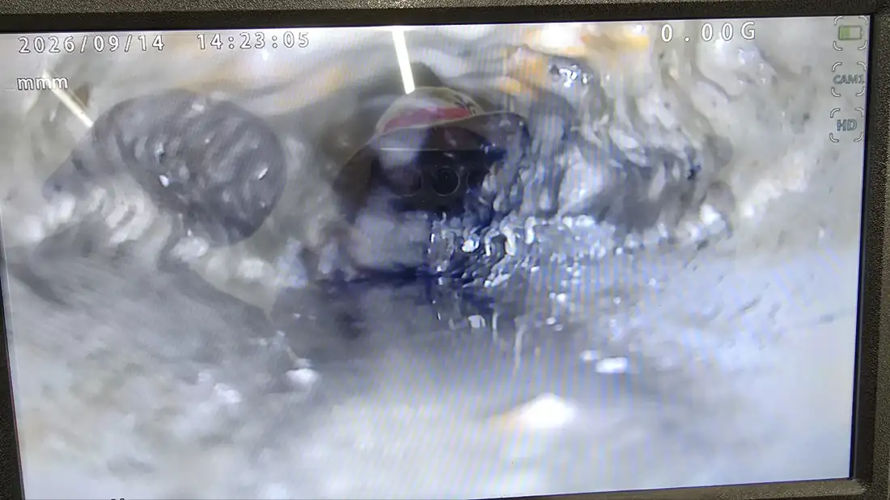
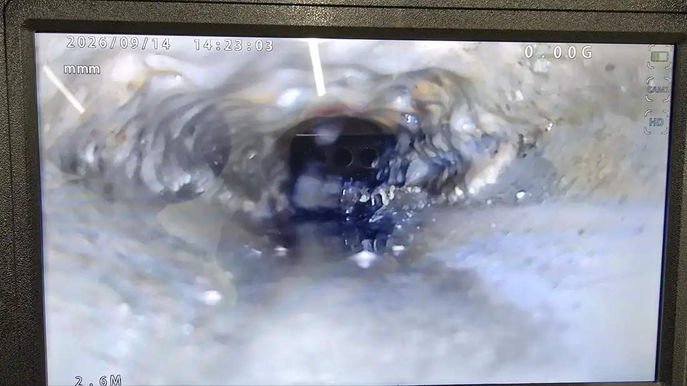
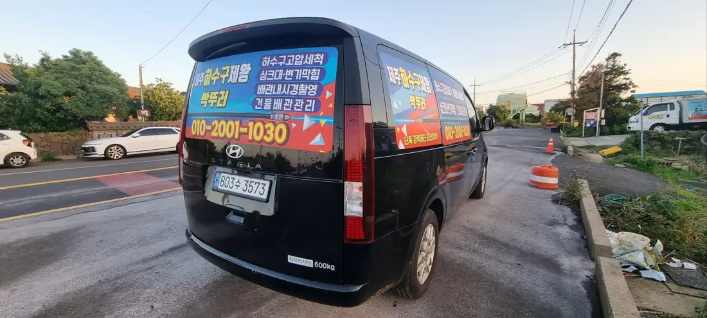
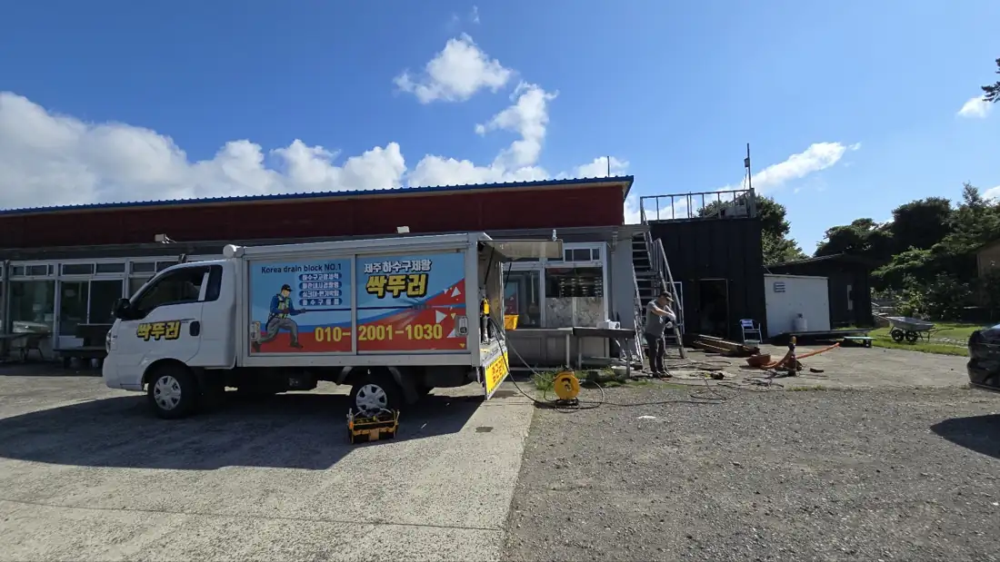

01
변기막힘
물티슈 · 이물질 막힘을 변기를 떼지 않고 먼저 해결합니다.
제주시 · 서귀포시 전 지역 24시간 출동
Jeju Drain & Pipe Experts
완벽하게 문제해결
하수구막힘 · 싱크대·변기막힘 · 고압세척 · 배관내시경 · 해빙작업
내시경 진단 후 작업
작업 전 비용 먼저 안내
변기는 떼지 않고 먼저 시도
작업 후 주변 정리까지
제주시·서귀포시·애월·한림·조천·성산
강력해진 최신 장비와 기술로 완벽하게 문제해결
하수구, 싱크대, 변기막힘, 고압세척, 배관내시경, 해빙작업 전문
언제든 24시간 365일
무료 상담 서비스!
010-2001-1030
24시간
긴급 출동
365일
연중무휴
2대
장비를 싣고 달리는 출동 차량
0원
해결 못 하면 작업비

최신 배관 장비 보유
원인을 찾고 물길을 다시 여는 과정을 그대로 담았습니다. 맡기시기 전에 직접 확인해 보세요.
가정집부터 식당 · 상가 · 펜션 · 건물 배관까지, 제주 어디든 장비를 싣고 갑니다.

01
물티슈 · 이물질 막힘을 변기를 떼지 않고 먼저 해결합니다.

02
기름때로 좁아진 주방 배관을 관통기와 세척으로 되살립니다.

03
식당 · 상가 바닥 배수로와 오수받이의 슬러지를 걷어 냅니다.

04
장비 차량의 고압 세척기로 건물 오수관과 맨홀까지 세척합니다.

보고 확인한 뒤 작업합니다
전화나 예약으로 증상과 위치를 알려 주시면 가까운 기사가 바로 출발합니다.
배관 안에 카메라를 넣어 막힌 위치와 원인을 화면으로 함께 확인합니다.
작업 방법과 비용을 먼저 말씀드리고, 동의하시면 관통기 · 고압 세척으로 작업합니다.
물을 흘려 흐름을 확인하고 내시경으로 다시 본 뒤 주변까지 정리합니다.
전문 장비를 실은 차량 두 대가 제주시 · 서귀포시 전 지역으로 출동합니다.

고압 세척기 · 호스 릴 · 발전 장비를 모두 실은 전용 트럭. 맨홀과 건물 오수관을 현장에서 바로 세척합니다.

배관 속을 화면으로 보며 막힌 위치를 정확히 찾습니다.

굽은 배관 깊숙이 굳은 이물질을 뚫어 냅니다.

좁은 골목 · 실내 작업용 장비를 싣고 빠르게 출동합니다.
변기 한 칸부터 건물 오수관까지, 싹뚜러가 다녀온 실제 작업 모습입니다.
꽉 막혔던 배관에 물길이 다시 열리는 모습, 영상으로 확인해 보세요.
직접 맡겨 주신 분들의 이야기
남겨 주시면 확인 후 바로 전화드립니다. 급하시면 지금 전화 주세요.
제주시제주시 동지역 전체 · 애월읍 · 한림읍 · 한경면 · 조천읍 · 구좌읍 · 추자면 · 우도면
서귀포시서귀포시 동지역 전체 · 대정읍 · 안덕면 · 남원읍 · 표선면 · 성산읍
네. 24시간, 주말과 공휴일에도 출동합니다. 심야에는 도착까지 조금 더 걸릴 수 있습니다.
현장에서 원인을 확인한 뒤 작업 전에 비용을 먼저 안내해 드립니다. 동의하신 뒤에 작업합니다.
막힘을 해결하지 못한 경우에는 작업 비용을 받지 않습니다. 출장비 기준은 상담 때 안내해 드립니다.
대부분 떼지 않고 뚫습니다. 이물질이 깊이 걸린 경우에만 탈착 후 작업하며 미리 말씀드립니다.
제주시·서귀포시 읍면 전 지역에 출동합니다. 우도·추자는 배편 일정에 맞춰 예약해 주세요.

제주시·서귀포시·애월·한림·조천·성산
지금 전화 주시면 가까운 기사가 바로 출발합니다.
하수구막힘, 싱크대·변기막힘, 고압세척, 배관내시경, 해빙작업